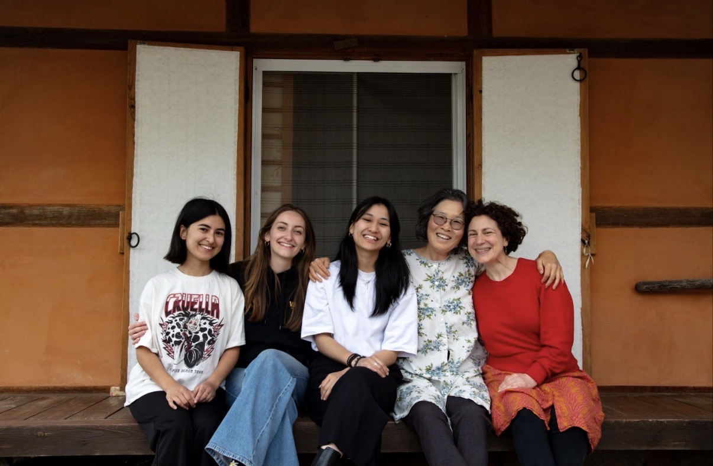
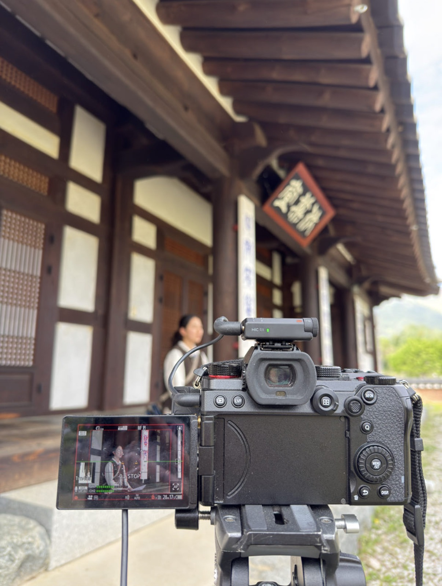
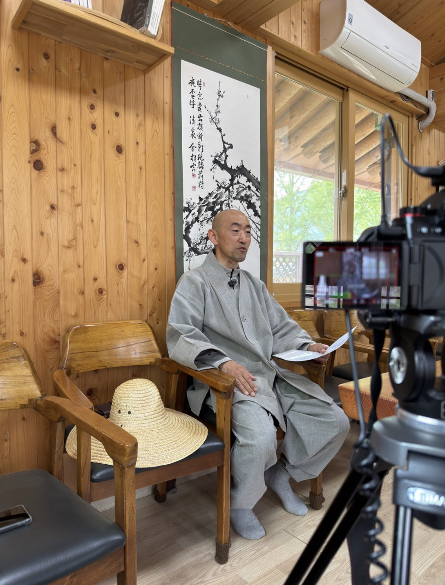
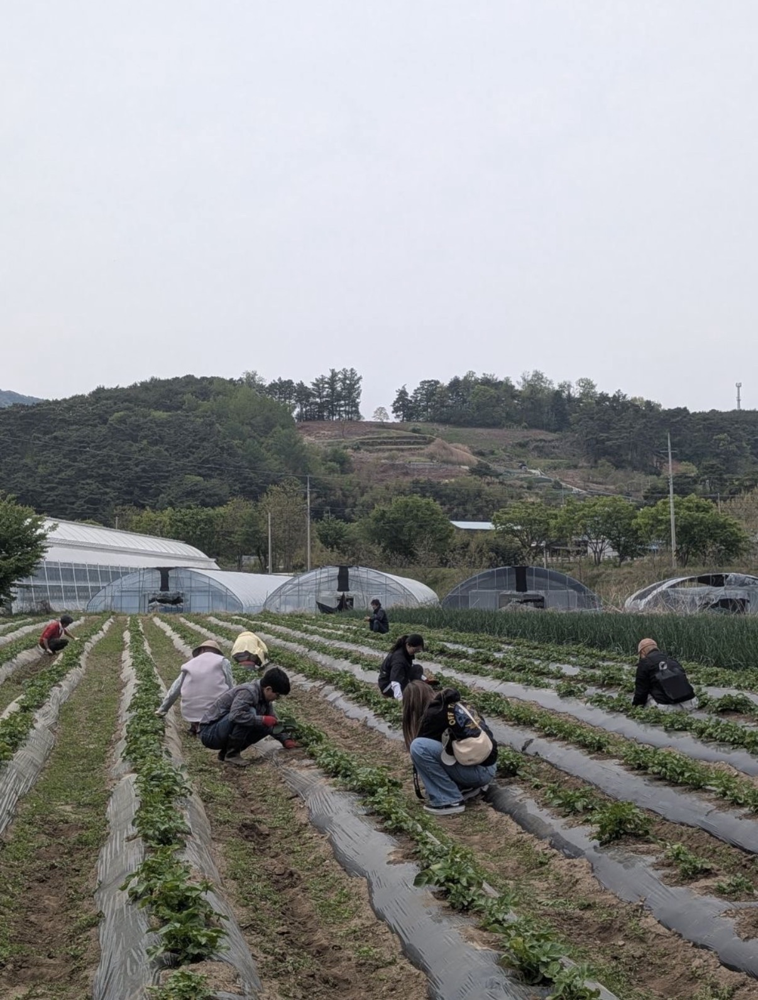

DOCU
EN CORÉE
DU SUD
Réalisation d'un documentaire entre ruralité coréenne et spiritualité
2026
Réalisatrice
Directrice photo
Monteuse
DaVinci Resolve
Voyage de fin d'étude en Corée du Sud
dans le cadre du master CMW
Lors de mon voyage de fin d'études, nous devions réaliser un documentaire en Corée du Sud. Notre thème portait sur la recherche de la ruralité. Nous nous sommes rendus dans le village de Sannae, où nous avons rencontré les habitants.
Le documentaire, intitulé Recueil, m'a été confié pour la prise de vue, le cadrage ainsi que la direction esthétique, avec un cahier des charges précis. L'idée était d'adopter un format 3/4 afin de créer une proximité et une intimité avec les personnages.
J'ai également réalisé le montage du documentaire, en élaborant la structure narrative, divisée en deux parties : Habiter ici, qui suit la rencontre avec les habitants, et Le Fils d'Indra, qui explore une approche philosophique et spirituelle du village.




Le chapitre 1 du documentaire "Habiter ici" est disponible ci-dessus.
Une expérience interactive complémentaire est disponible ici :
recueil.mastercmw.com